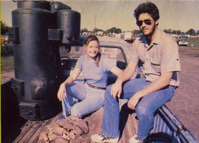
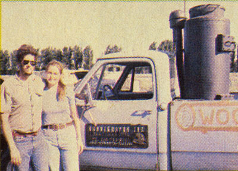
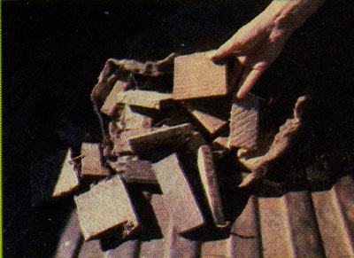

Wood Gasification: A Renewable Fuel Option To Power Your Vehicle
Burning wood for fuel is an inexpensive and renewable alternative to gasoline.
By the Mother Earth News editors
January/February 1981
As even greater numbers of folks turn to renewable fuels to fulfill their energy needs, the potential of wood gasification is being rediscovered. Most people today aren’t strangers to the idea of warming homes or cooking foods with wood, but few realize that the ligneous hydrocarbon can yield a viable - and proven - substitute for gasoline (known as “producer gas” or “gengas”) ... a replacement that might just be the closest thing to a “free ride” in existence today!
Wood Gas: An Old Idea Reborn
Throughout the lean years of the Second World War, civilians in Europe - and, to a lesser extent, here at home - took advantage of wood energy to power vehicles and drive stationary engines. (See How to Run Your Own Car on Wood.) Today, the concept is just beginning to enjoy a new wave of interest as a result of excessive gasoline prices ... and Steve and Lois Nunnikhoven - of Oakville, Iowa - are among the people who are re-pioneering wood-powered vehicle research.
The husband and wife, you see, run a small woodstove manufacturing business and offer delivery service to their customers ... a practice which used to cost the firm hundreds of dollars in transportation expenses each month. So, to ease their “gas pains,” the couple decided to investigate alternative fuels ... and were surprised to find that energy from wood - in the form of vapors produced under controlled burning conditions - could indeed power a vehicle and would require a minimum of engine modification. After doing some research, the Nunnikhovens fabricated a wood-gas generator for their delivery truck ... and they’ve been using the vehicle as a working “guinea pig,” to test performance and various designs, over the past several months.
Here’s how the Iowa couple’s wood gasification system operates: The wood scraps - pieces ranging from one to five inches on a side - are contained in a four-foot-high, 18-inch-diameter hopper with one-eighth-inch-thick walls. The chamber is sealed except for an airtight fill lid and an adjustable intake draft control. Inside this drum is a cone-shaped stainless steel hearth that’s ventilated to allow interior convection. From the hop per a gas outlet pipe connects, in series, to a drop filter and a centrifugal canister. Then additional tubing routes the fumes through a water vapor separator and on into the engine compartment ... where they’re fed into the carburetor’s breather shroud through a manually controlled air mixer valve which regulates the amount of “atmosphere” in the blend for a proper ratio. (The Carb’s butterfly valve then governs engine speed, as usual.)³
Where There’s Smoke ...
The producer gas is formed under conditions of high heat and controlled “respiration.” As air enters the generator, the solid fuel within the hearth burns, releasing carbon dioxide and water vapor ... and at the same time “manufacturing” a hotbed of charcoal in the base of the generator. The gases are then drawn by engine vacuum through the glowing carbon coals, where a destructive distillation process breaks down the CO² and water into carbon monoxide and hydrogen ... a mixture which - along with nitrogen, a small amount of methane, some unconverted carbon dioxide, ash, soot and water vapor - forms the final “gengas” fuel. Of this chemical potpourri, only about 45 to 50 percent is combustible ... and some components (notably ash, soot particles and water vapor) must be filtered out to prevent poor performance and possible engine damage.
After the gaseous fuel is “scrubbed,” it’s mixed in a roughly one-to-one ratio with fresh air and used directly in the engine. The Nunnikhovens opted to set up a dual-fuel (gasoline/producer-gas) arrangement for convenience. To do so, they simply installed a solenoid-operated shut-off valve in their truck’s petrol line, and rigged it so that the switch stops the flow of gasoline to the carburetor whenever the air mixer valve is moved from the full-open position (which, of course, is always the case when the vehicle operates in the “gengas” mode).
You Get What You Pay For
The Hawkeye Staters’ earliest experiments confirmed their expectations that the wood-fueled vehicle wouldn’t have quite the get-up-and-go that it did in its gasoline mode. (As near as they can figure, between 35 and 50 percent of their original power has “gone up in smoke.”) On the other hand, they couldn’t be happier with their fuel bill (which is pretty close to zero, since the pair can cut or scrounge much of the wood).
But even if their fuel were purchased at the market price of $100 a cord, or roughly 3 cents a pound, Steve calculates that the timber equivalent of one gallon of gasoline (20 pounds, or a five-gallon bucketful of scraps) would cost only about 60 cents! The economical nature of the fuel - coupled with the fact that an entire woodburning propulsion system can be put together for about $100 in scrounged parts - certainly makes the idea of “poplar power” look mighty attractive.
Potential Drawbacks of Wood Gasification
Besides the loss of “zip” (the effect of which can be somewhat eased by converting an older, overpowered, large-displacement, high-compression engine to wood fuel and advancing its ignition timing), there are other disadvantages to gengas fuel. Obviously, a producer - gas generating unit - with its wood supply - is going to take up more space than does a standard gasoline tank. Also, because of the nature of the fibrous hydrocarbon energy source, scheduled maintenance - especially on the filter systems - must be frequent to prevent engine damage. But probably the most important fact to be aware of is that the gaseous fuel produced by the burning wood is 20 to 28 percent carbon monoxide ... which can be deadly if allowed to leak into the vehicle’s passenger compartment or a closed garage. (Of course, the same poison is present in the exhaust fumes of gasoline engines.)
Nevertheless, if the proper precautions are taken and the system installed carefully, there’s no reason that high “octane,” relatively clean-burning wood gas can’t be a practical substitute for petroleum fuel. (In fact, MOTHER’s researchers are so “fired up” over the idea that they’re designing their own apparatus to be used on one of MOM’s pickups, and we’ll be sure to cover that in a future issue!)
|
 PHOTO: MOTHER EARTH NEWS STAFF This Iowa couple “cut” their travel costs by using wood gasification in their truck. |
 PHOTO: MOTHER EARTH NEWS STAFF The couple’s on-board gasogen unit. |
 PHOTO: MOTHER EARTH NEWS STAFF The system’s air volume is controlled by the slotted mixer valve. |
|
 PHOTO: MOTHER EARTH NEWS STAFF Wood scraps - such as sawmill tailings - make good fuel. |
|
|